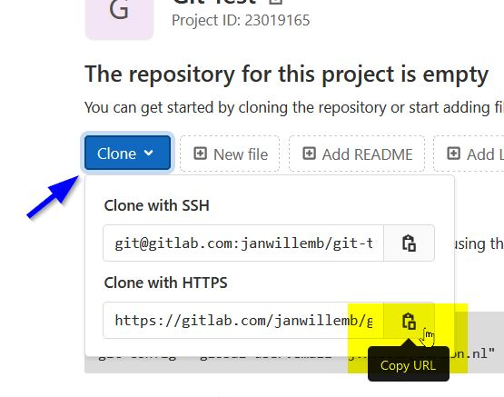
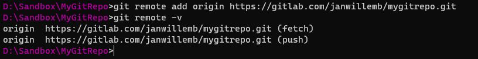
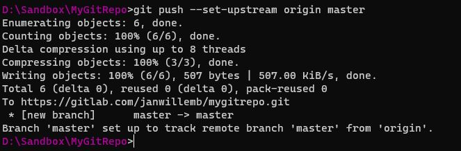
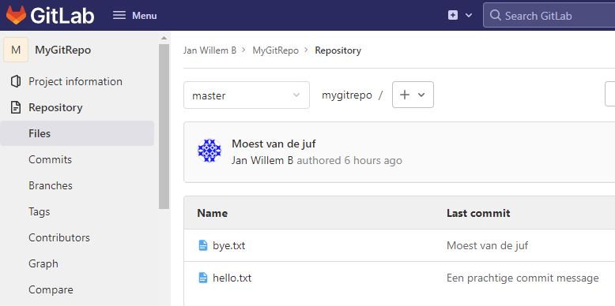
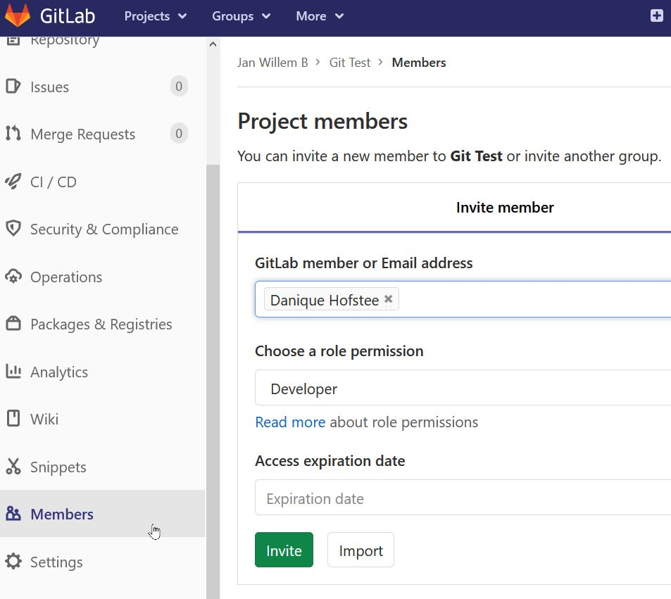
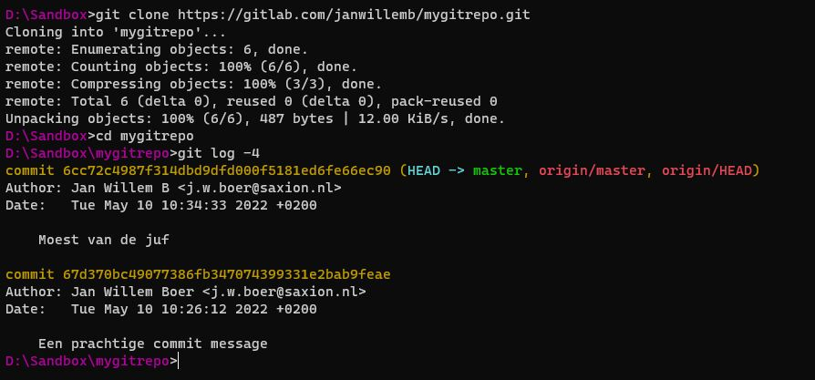

Als je die nog niet open had staan: open je terminal naar de directory waar je git repository van de vorige instructie staat.
Je moet eerst een repository op gitlab maken om mee samen te werken (gebruik hier geen bestaande repository voor).
Je krijgt nu een pagina te zien van het lege project met wat commandline instructies. Je hebt nu de git URL van het project nodig. Klik hiervoor op de "Clone" knop en klik op het "Copy URL" knopje bij "Clone with HTTPS":

Ga terug naar de terminal. Hier gaan we nu je lokale git commits pushen naar de remote repository op gitlab.
Je lokale git repository heeft nog geen verbinding met gitlab. Die breng je aan met git remote add origin <url>, waarbij de url van de repository is die je net hebt gekopieerd.

Nu kun je je complete git commit history naar gitlab "pushen". Dat doe je met git push. Omdat het de eerste keer is moet je aangeven dat het om de masterbranch gaat: git push --set-upstream origin master.

Vanaf nu hoef je alleen nog git push te gebruiken om je commits te pushen. Probeer het eens uit:
git add -Agit commit -m "Een wijziging"git pushCheck op de website van gitlab bij Repository > Files en > Commits of het gelukt is:

Je kunt nu bij "Members" andere mensen uitnodigen in jouw repository. Klik op "Members", zoek de persoon die je wilt uitnodigen, en maak die persoon Developer. Druk op "Invite" om de invite te versturen.

Als je in het project van iemand anders wilt werken, of als je een bestaand project van jezelf lokaal wilt zetten, dan heb je de gitlab URL nodig, zoals je die vindt onder de "Clone" knop bij "Clone with HTTPS". Kopieer deze url (die eindigt met .git).
Ga met de terminal naar de plek waar je de repository wilt gaan gebruiken, maar maak de directory zelf nog niet aan (dat doet git voor je).
git clone <url>, waarbij url de link is die je net hebt gekopieerdgit log -4 om te kijken of het gelukt is
Je kunt nu committen zoals je ook met een eigen project kunt.
Doe voordat je pusht altijd een git pull om de wijzigingen van anderen eerst binnen te krijgen en eventuele conflicten op te lossen!
Conflicten los je het beste met een GUI tool op. Dan krijg je per bestand de keuze of je
Als je conflicten hebt opgelost (gemerged), dan moet je daarna de merge daarna nog een keer committen, want het doen van een merge levert uiteindelijk toch weer wijzigingen op. Sommige tools doen dit al automatisch voor je.
Als er geen conflicten (meer) zijn, doe dan een git push om je eigen commits naar gitlab te publiceren.